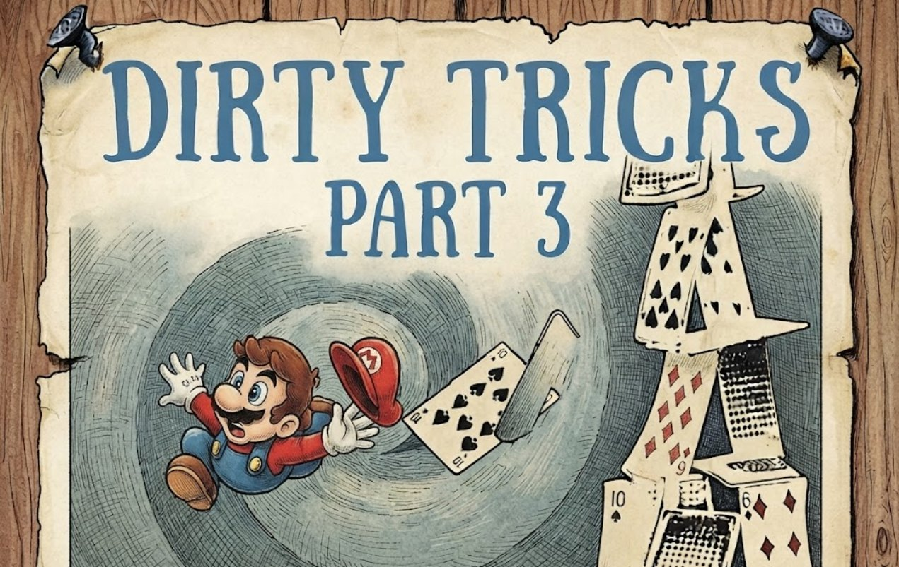
Семнадцать лет назад Брэндон Шеффилд собрал на Gamasutra классическую подборку "Dirty Coding Tricks" (http://www.gamasutra.com/view/feature/132500/dirty_coding_tricks.php), перевод на Хабре тут, и "Developers share their most memorable dirty coding tricks"(https://www.gamedeveloper.com/programming/developers-share-their-most-memorable-dirty-coding-tricks) где были камера, повёрнутая на 90 градусов вместо починки рендера, пробел, добавленный в код ради совпадения контрольной суммы, и два мегабайта памяти, спрятанные "на чёрный день", чтобы торжественно достать их за неделю до сдачи.
С тех пор подборки растащили на цитаты, я находил некоторые из них даже в коде проектов, а жанр прижился не только среди игровых разработчиков игр. Думаю программистский люд полюбил такие истории, потому что частенько узнавал в них себя, свои дедлайны и позорные хаки, которые могут до сих пор крутиться где-то в проде.
Эта статья шутливое продолжение той подборки, с историями того же жанра в виде американских студийных легенд, классики восьмидесятых, российского и советского геймдева с его особым настроением. Часть баек непроверены и источников я не нашел, часть действительно оказалась байками, но оказались настолько убедительными, что легенда в итоге победила реальность в буквальном смысле, попав в код одной из игр.
Я постараюсь указать рассказчика, если это будут чужие воспоминания, а если история существует только в виде фольклора, поставлю пометку, что это фольклор. Как вы увидите, разница бывает важна. Итак поехали, надеюсь, получится интересно...
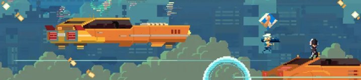
Про батарейку...
Игра "Super Time Force" от Capybara Games целиком была построена вокруг механики перемотки времени и если игрок умирал, то отматывая время назад он бежал рядом со своей прошлой копией, и таких копий могло быть много. С точки зрения движка это означало, что состояние каждого объекта нужно хранить на каждый момент времени, а поскольку размер памяти был вечной головной болью на Xbox 360, то захачить эту механику было несложно.
На сертификации игры QA прислали баг, что если две минуты долбить по всем кнопкам с максимальной скоростью, потом перематываешь время, потом повторяешь... и повторяешь еще, то игра падает. Это нормально, что текстировщики присылают такие, баги... ненормальное начинается, когда садишься их чинить.
Краши на сертификации не вейвятся никакими мольбами, тем более краш от внутренних тестировщиков вендора, поэтому сертификация оказывается завалена. Добро пожаловать на пересдачу через две недели. А если до релиза остается месяц, то "нормально" чинить основную игровую механику означает гарантированно сорвать этот самый релиз, поэтому команда стала детектить нечеловеческую скорость нажатий и если игрок жал кнопки быстрее, чем физически на это способен обычный человек, тестировщики все же отдельный злобный подвид игрового люда, значит это либо тестировщик, либо обезьяна стучит контроллером по клете, и в обоих случаях можно сделать вид, что игрок случайно ошибся и умер. Игрок умирает, часть буфера таймлана схлопывается, память освобождается, все довольны.
Но тестировщики майкрософта тоже не лыком шиты, и увидев такое наглое попрание затраченных на нахождение этого очень коварного бага усилий, нашли другой баг, теперь уже перегружая таймлайн большим числом взрывов, которые конечно же тоже жили по игровым законами перемотки времени. Релиз все ближе, делать что-то надо, поэтому при приближении к лимиту памяти на экран вываливался диалог разряженной батареи контроллера, и игрока вежливо выкидывало в меню выбора уровня, даже если контроллер при этом был заряжен полностью.
QA, увидев знакомый системный диалог, баг закрыли, фикс приняли, и игра сертификацию прошла. Историю рассказал технический директор студии Кеннет Юнг.
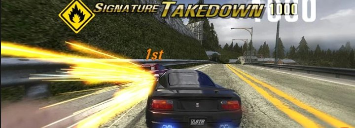
Про важность фпсометров...
Разработчики гоночной игры (вероятно это была Burnout 3: Takedown судя по времени, студии и авторе байки) столкнулись с жалобой тестировщиков, что управление машиной ощущается иначе, ежели на виртуальном торпедо рисуется иконка со счетчиком FPS. Не уверен про иконку... Причину такого поведения не находили, и в мастер-сборке, где счётчика не было, машины описывались "дергаными", то есть фпсометр каким-то образом влиял на физику машины.
Две недели инженерной работы, раскопки физики, поиски переменных, зависящих от состояния стека после вывода шрифта, проверка таймингов и порядок обновления подсистем... ничего не дали. Причину так и не нашли и игру в итоге отгрузили с включённым навсегда счётчиком кадров, который печатался за правым краем экрана. Миллионы игроков играли в гонку, в углу которой невидимый виджет исправно выводил две циферки и одним фактом своего существования чинил физику и управление.
Мартин Тёртон (Martin Turton), работавший тогда в студии Criterion Games, рассказывал об этой проблеме именно в контексте разработки версий для PlayStation 2 и Xbox. По словам Мартина, разница в поведении физического движка заключалась в том, что при отрисовке текста (счётчика FPS) менялось состояние памяти или кэша, что каким-то образом "выравнивало" тайминги при работе с VSync, на которых было завязаны физические расчеты в игре. Яркий пример жанра гейзенбагов, и если не понимаешь причину, то зафиксируй следствие, которое её чинит.
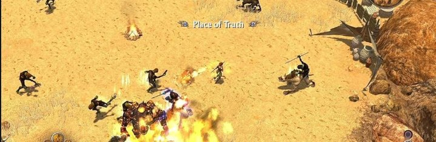
Про невидимых белок...
Игра Titan Quest не имела системы таймеров для квестов, и любой триггер срабатывал мгновенно на следующем кадре после активации, поэтому возможности "подождать три секунды и потом открыть дверь" просто не было. Фичу запросили под конец разработки игры, что было почти нереальной задачей, потому что тянуло за собоей переделку системы квестов.
Тестировщик, помогавший со скриптами, обнаружил, что задержку можно получить через длительность анимации при спавне игровых существ, на которых можно было повесить тригеры скриптов. Ждёшь конца анимации, получаешь триггер. В качестве таймера была выбрана белка, декоративная живность, которая в игре просто бегала для красоты, а теперь её невидимая версия начала работать на уровнях как таймеры, отмеряя нужные задержки через анимации.
Безобидные грызуны стали стандартным механизмом отсчёта времени в коммерческой RPG, и по сей день где-то в греческих лесах Titan Quest до сих пор обитают толпы невидимых белок и добросовестно... тикают. За изобретательность парню выдали именной бубен и должностью верховного-дизайнера, а грязный хак стал стандартным механизмом в игре. Рассказал владелец Crate Entertainment Артур Бруно.
Про секунду тишины...
При работе над Mega Man Legacy Collection для 3DS разработчики поймали баг системе звука, который так и не смогли отследить. Самый первый звук в игре, при отображении логотипа студии, заикался или не проигрывался вовсе, а дальше всё работало идеально, ломался только первый звук.
Дебаг показал, что флаг "канал играет" в аудио-API Nintendo считал канал занятым для первого запущенного в игре звука, хотя физически ничего не звучало. Там могло быть все что угодно, от гонки инициализации, до особенности прошивки в фазе луны, поэтому перед первым настоящим звуком игра проигрывала одну секунду тишины.
Тишина заикалась и мужественно не игралась, а звук для логотипа шёл вторым и звучал уже нормально, с этим фиксом и отгрузили. Рассказал Кит Кайзершот, и я почти уверен, что этот приём независимо изобретали десятки аудиопрограммистов по всему миру, и не один раз. На одном из проектов у нас тоже было "silent alert" звук, который мобы слышали, а игрок нет, так моб сообщал все вокруг, что его обстреляли. Сайлент звуки вообще один из древнейших паттернов в разработке игр, позволяющий предупреждать врагов вокруг, открывать двери, запускать скрипты и даже закрывать квесты, но это уже... совсем другая история.
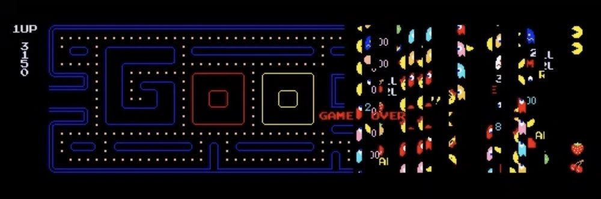
Про уровень 256...
Счётчик уровня в Pac-Man был всего один байт, так что 256-й уровень хранился как 255 (0xFF). Отрисовка фруктов внизу экрана брала номер уровня и прибавляла единицу, но на 256-м уровне 255+1 переполняется в 0, и игра начинает рисовать мусор из чужих участков памяти на правой половине экрана, пройти уровень этот уровень было невозможно, потому что не было видно нужных точек для сбора.
Разработчики Namco считали, что растущая сложность не даст никому доиграть до 250 уровня, и обработку переполнения просто не написали. Первым "идеальную партию" с выходом на 256-й уровень (3 333 360 очков) официально засчитали Билли Митчеллу в 1999-м.
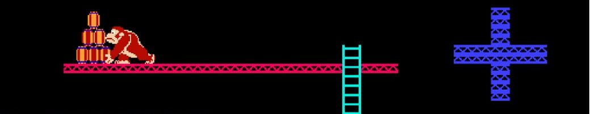
Про 4 секунды...
Время до завершения уровня в Donkey Kong считается как 10×(уровень+4), но на 22-м уровне это ограчние получается 10×26 = 260, что при 8-битном счётчике дает 4, т.е. игроку остаётся всего ~4 секунды, которых физически не хватает добежать до верха, и Марио гибнет.
44 года этот уровень считался непроходимым, пока в феврале 2025-го спидраннер Kosmic впервые не прошёл его через глитч лазанья по "сломанной" лестнице плюс удачный тайминг бочек. То есть легенда о непроходимости оказалась не совсем верна и игру можно пройти без "модификаций". Хороший пример того, когда даже "железобетонный" баг спустя десятилетия всё же поддаётся.
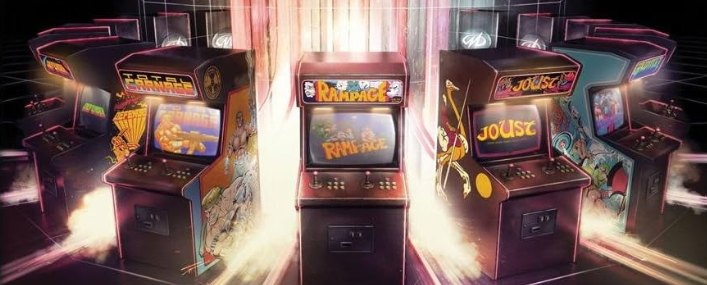
Про чужие API...
В студии Backbone взялись за считанные недели портировать шесть аркад Midway на раннюю PlayStation 3, но проблема была в том, что код этих игр, выходивших до этого на Xbox Live Arcade, был совсем не кроссплатформенным и по самые уши сидел в DirectX.
Несколько недель страданий и переписывания слой рендера каждой игры под новый графический API PS3 вылилось в то, что команда частично реализовала сам API DirectX поверх видеосистемы PS3. С инженерной точки зрения в игровой разработке, прослойка-имитация чужого API легальная классика портирования восьмидесятых годов, но с юридической и сертификационной точки зрения об этом не рассказывают на встречах с платформодержателем.
Автор истории, Иан Шерман, вспоминал, что последнюю неделю проекта команда потратила, заметая следы, меняя имена функции и вычищая из сборки все упоминания, по которым можно было опознать вызовы чужой API. Игры вышли, а PS3 почти год притворялась немножко виндой, пока рендер не переделали полностью под платформенный API.
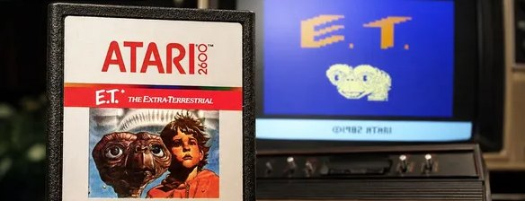
Про закопанные игры...
Atari купила права на "E.T." у Спилберга за порядка 25 млн долларов в конце июля 1982-го, и программисту Говарду Скотту Уоршоу дали всего около пяти с половиной недель на разработку вместо обычных полугода-года, чтобы успеть к Рождеству.
Игра вышла в декабре 1982-го, провалилась и стала одним из символов краха игровой индустрии 1983 года. Легенда гласила, что непроданные картриджи Atari закопала на свалке в Аламогордо (Нью-Мексико) и десятилетиями в это не верили, и даже сам Уоршоу считал эту историю байкой, пока 26 апреля 2014-го публичные раскопки это дело не потвердили. Позже один из менеджер Atari Джеймс Хеллер уточнил масштаб трагедии, картриджей оказалось не «миллионы», а около 728 000 единиц (общее число, E.T. предположительно занимали 10% объема), но осталась непотвержденным факт про еще два подтвержденых места захоронений, потому что общее число выпущенных картриджей было порядка 5 миллионов картриджей E.T., из которых продали около 1,5 миллиона, а ~3,5 миллиона канули в неизвестность.
Еще одним местом считается завод в Эль-Пасо, где картриджи от игр перемалывали в утиль для дальнейшей переработки. Руководство Atari увидев, как местные растаскивают свалку, распорядились залить всё сверху бетоном, но местные подростки в 1983-м все равно пробирались мимо охраны и приносили десятки раздавленных, но ещё рабочих картриджей.
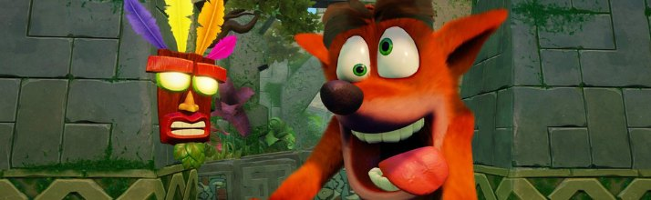
Про самый упорный баг...
Дэйв Баггетт (Naughty Dog) один из двух программистов на первом Crash Bandicoot, писал код сохранений. Байку иногда приписывают Энди Гэвину, второму программисту и сооснователю студии.
Изредка, запись на карту памяти отваливалась по таймауту, а поскольку запись не была транзационной, то неудачная попытка затирала карту игрока целиком. То есть баг не просто мешал сохраняться, он физически уничтожал сохранения от других игр.
Баггетт методично вырезал куски кода, пока не осталась почти голая инициализация движка и вызов записи, но баг всё равно иногда воспроизводился. Т.е кода уже почти не было, а баг ещё был. Причина оказалась в железе, когда ребята ради максимально точной симуляции физики выставила программируемый таймер PS1 на один килогерц, или тысячу прерываний в секунду, тогда как по умолчанию тот работал на сотне герц.
Этот избыточный таймер конфликтовал с обменом по портам контроллера с картой памяти, что изредка приводило к потере данных, и операция записи ломалась. Классический случай, когда перфекционизм в одной системе ломает совершенно другую, никак с ней не связанную. Так и тут тюнинг физики прыжков бандикута убивал карту памяти, и попробуйте найти такую связь, глядя в код сохранений.
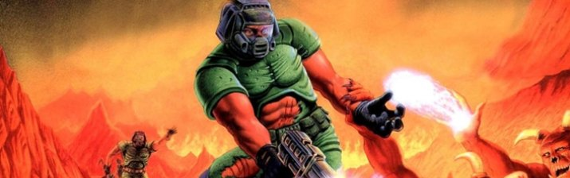
Про папу Dooma...
Из книги "Masters of Doom" Дэвида Кушнера.
Юный Джон Кармак в четырнадцать лет решил, что ему нужен компьютер Apple II из его школы. Проникновение было организовано с фирменной кармаковской основательностью, а окно в кабинет вскрывали с помощью термитной смеси, но "операция" провалилась.
Кармак попал на психиатрическую экспертизу и год в интернате для трудных подростков, а мировой геймдев получил своего главного инженера с уже сформированной репутацией сложного подростка, для которого препятствия носят чисто технический характер.
Про DOOM, который забанили...
Когда пара этих гениев прикручивали к DOOM сетевую игру, то сделали первую версию сетевого кода на IPX, который просто и рассылал широковещательные пакеты с данными, то есть каждое обновление состояния игры получала каждая машина в локальной сети, включая те, что ни в какой DOOM не играли и вообще были бухгалтерским сервером.
Deathmatch на четверых укладывал спать локальную сеть целого кампуса штормом broadcast-пакетов, а системные администраторы по всей Америке уже через неделю после релиза научились фильтровать трафик DOOM и банить тачки с игрой. В университетах игру запрещали приказами, а долгожданная сетевая фича, породившая сам термин deathmatch, на первых порах работала как ddos-атака. Немногие игры могут похвастаться тем, что их патчноуты писали под давлением сисадминов бухгалтерии, а не игроков.
Про ядреного Ганди...
Легенду вы наверное знаете... Считается, что в первой Civilization мирному Ганди задали минимальную агрессию, равную единице и при переходе Индии к демократии агрессия лидера снижалась на два и уходила в минус, беззнаковый байт переполнялся, единица превращалась в 255, и величайший пацифист в истории человечества начинал закидывать соседей ядреными подарками. История разошлась настолько широко, что её до сих пор приводят как хрестоматийный пример целочисленного переполнения, как минимум, я сам слышал именно эту версию.
Но Сид в мемуарах прямо написал, что никакого такого бага в оригинальной Civilization не было, быть не могло, а целочисленные переменные были знаковые, так что беззнакового переполнения в единицу-минус-два просто не случилось бы. И даже если бы значение каким-то чудом стало 255, то агрессия использовалась в игре как уровни 0-1-2, так что 255 было бы просто двойкой по смыслу, и Ганди вёл бы себя как обычно. Ни одного подтверждённого свидетельства "грязного Гарри" в оригинальной игре девяносто первого года нет, а сам мем оформился на форумах и вики уже в 2010-х, задним числом.
Но легенда оказалась настолько убедительной, что в Civilization V Ганди уже намеренно сделали самым вероятным кандидатом на применение средств доставки, и разработчики, зная этот мем решили подыграть. Так выдуманный баг стал настоящей фичей, пускай и задним числом.
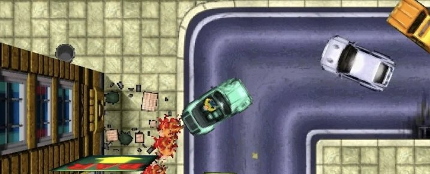
Про полицейских-психопатов...
Проект студии DMA Design под рабочим названием Race'n'Chase был про гонки с копами в открытом городе с видом сверху, но погони получались довольно пресными, и издатель прикидывал, не закрыть ли всё это дело, но тут в вмешался его величество "Случай". Сломался поиск пути у полицейских машин и во время погони те начали пытаться протаранить игрока насквозь, срезая через тротуары и встречку, устраивая хаос почище игрока.
Стоило нарваться на таких копов и скучная погоня быстро превратилась в безумие, раздавленных пешеходов и разрушенный город, а тестировщики, еще вчера зевавшие на прогонах, стали драться за место у тестовой машиной. Психованные полицейские настолько всем понравились, что баг чинить не стали, а наоборот построили на нем отдельную механику погонь и сместили акцент игры с гонок на криминальную свободу, подарив миру Grand Theft Auto.
Так один баг в ИИ фактически задал ДНК самой коммерчески успешной серии в истории игр. Теперь каждый раз, когда за вами в GTA летит обезумевший полицейский седан, вспомните про баг тридцатилетней выдержки.
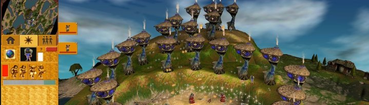
Про фасоль и симулятор бога...
До игр Питер Молиньё с приятелем Лесом Эдгаром держали фирму по доставке товаров и среди прочего возили консервированную фасоль на Ближний Восток. Фирма называлась Taurus, и к геймдеву она имела примерно такое же отношение, как фасоль к компилятору.
Commodore перепутала их Taurus с сетевой софтверной фирмой Torus и на волне этой путаницы предложила будущим отцам жанра god game десяток бесплатных Amiga. Молиньё, по его собственным воспоминаниям, не спешил развеивать недоразумение и подмахнул документы, пока раздавать бесплатные компьютеры не передумали.
Стоит оговориться, что почти вся эта история известна со слов самого Молиньё, а он знаменит любовью к красивому пересказу, так что за фактурную точность компьютерной фасоли я не поручусь. Когда для новорожденной студии понадобилось имя, выбрали его со стоявшей в офисе фигурки лягушки, на подставке которой красовалась надпись "Bull Frog by Leonardo". Так легендарная студия получила имя.
А Populous, породивший целый жанр god-игр, собрали из Lego, когда Молиньё с товарищами выкладывали кубиками рельеф и двигали пластиковых человечков. Правда, сам он позже признавался, что для баланса игры это не дало ничего и работало в основном как отличный медийный повод и реклама. Это, однако, никсколько не уменьшает влиянния случая, когда студия, давшая миру целый веер новых жанров в виде Syndicate, Theme Park и Dungeon Keeper, выросла из чужой канцелярской ошибки, детского конструктора и пластиковой лягушки.
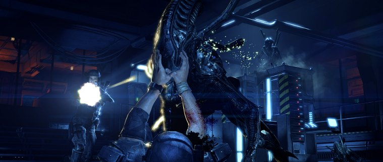
Про лишнюю букву...
В игре Aliens: Colonial Marines была опечатка файле PecanEngine.ini - в строке ремаппинга классов для ботов слово Tether (привязка поведения для ИИ) было написано как Teather с лишней "a". Движок искал корректный класс поведения бот для Tether, не находил, и параметры "привязки охоты" ксеноморфов сбрасывалсь к дефолтному поведению, поэтому пришельцы бродили как пьяные, застревали в стенах или стояли столбом под выстрелами.
Опечатку нашёл моддер (jamesdickinson963), а "PC Gamer" и "Kotaku" воспроизвели фикс с удалением одной буквы, после чего ИИ заметно оживал, начинал нормально ходить, фланкировать, уворачиваться от выстрелов и даже прыгать по стенам, что конечно же никак не свойтсвенно Чужим.
Надо отметить, что эффект от этого местами был на грани плацебо, потому что игра всё равно была плохая по куче других причин, начиная от невнятных кор-механик до откровенно слабого ИИ и незамысловатого дизайна уровней. Так что подавать это как "одна опечатка убила всю игру" не стоит, и будет правильнее сказать, что "одна опечатка отключила заметный пласт поведения ИИ". Издатель официально игру так и не пропатчил.
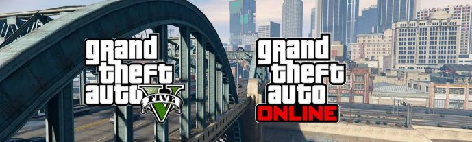
Про шестиминутные загрузки...
В феврале 2021-го программист под ником t0st (GitHub tostercx), задолбавшись шестиминутными загрузками GTA Online на пк, расковырял логику коннекта к магазину дизассемблером и нашёл два узких места. В первом игра парсила почти десятимегайтный JSON каждый раз при обновлении страницы (каталог магазина, ~63 тыс. позиций) через sscanf , а та внутри дёргала strlen на каждый элемент, превращая парсинг в O(n²). Второе место было тамже в проверке дубликатов предметов, который гонялся простым поиском для каждого из 63 тысяч элементов, что опять приводило к N² поиску.
t0st написал свою DLL, которая инжектилась в процесс и перенаправляла оба места на оптимизированные варианты, срезав загрузку примерно на 70% (с ~6 минут до ~2) и опубликовал детальный разбор на своём сайте. Позже Rockstar подтвердила проблему, внедрила фикс в апдейт 1.37 (16 марта 2021) и поблагодарила t0st в патчноутах, выплатив ему 10k$ багбаунти в порядке исключения,
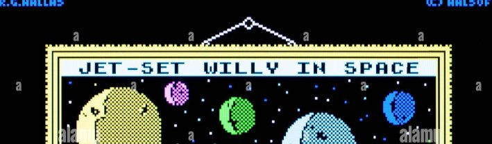
Про баги и шампанское...
Jet Set Willy Мэттью Смита вышла на ZX Spectrum в 1984 году и быстро стала хитом, с одной небольшой проблемой, пройти игру было физически невозможно. Виноваты были несколько несвязанных багов, один из которых затирал важные игровые данные, приводя к тому, что один из необходимых предметов пропадал. Разработчик просто не проверил прохождение целиком перед сдачей и не заметил проблему, издатель это все заапрувил, убедившись, что "ну основной путь работает".
К игре прилагался конкурс и первому прошедшему игры обещали вручить ящик Dom Pérignon, полёт на вертолёте и встречу с самим Мэттью Смитом. Напоминаю, пройти игру было нельзя. Издатель Software Projects, когда посыпались жалобы, сначала попытался выдать баг за намеренную фичу, но когда число жалоб на невозможность пройти игру перевалило за несколько сотен, баг все таки признали.
Победителями же конкурса стали двое игроков, Росс Холман и Кэмерон Элс, которые отчаявшись пройти игру и получить заветный ящик шампусика, залезли в код, доказали, что прохождение невозможно, и сами написали исправления. А потом еще и прошли починенную собственными руками игру и позвонили издателю с доказательствами, потом их правки легли в основу официального патча.
Свои призы они все же получили, и это, кажется, первый задокументированный случай коммьюнити-патча, за который заплатили шампанским и вертолётом.
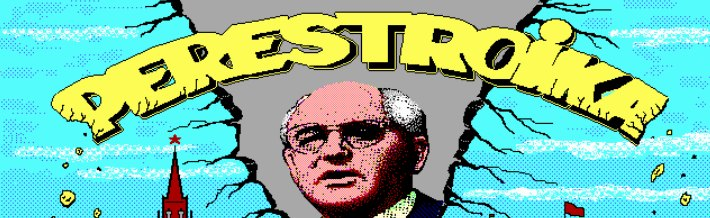
Про перестройку...
"Перестройка" 1990 года, которую написал Никита Скрипкин стал идеальным продуктом своего времени. Компанию "Никита" назовут в честь автора и создадут только годом позже, в 1991-м, так что привычная подпись "игра студии Никита" на самом деле немного опережала события.
Летом 1989 года автору подкинули идею сделать нечто в духе японских телешоу, где участники наперегонки прыгают по брёвнам и платформам над водой, политический момент в стране отразился в дизайн-документ и получилась политическая сатира, где лягушка-"демократ" скачет над болотом по кувшинкам, которые изображают законы и постановления, собирает товары народного потребления и валюту, избегая прогрессивного налога и уворачиваясь от "бюрократов" и отдельных злобных персонажей, которые норовят её поймать. На заставке, для полноты картины эпохи и реклами основных игровых механик, нарисовали Горбачёв на фоне проломленной кремлёвской стены под "Дубинушку".
Механика игры была простой и "залипательной", слово "аддитивный геймплей" тогда еше не придумали, а весь контент лежал на поверхности, достаточно было выглянуть в окно. Мало какой игре удавалось так дёшево получить настолько мощный отклик в трещавшем по швам Союзе.
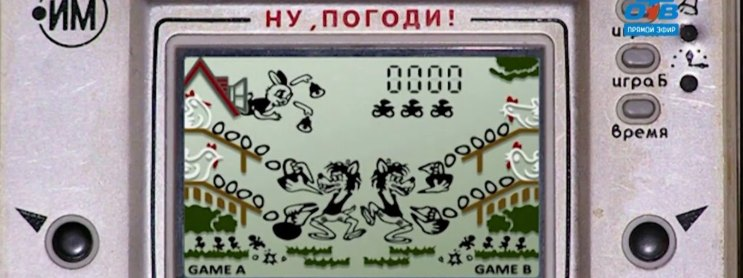
Про волка и мультики...
"Электроника 24-01/Ну, погоди!", она же "Волк ловит яйца" была первой массовой советской карманной игрой с сегментным ЖК-экраном, выпускалась с 1984 года, стоила поряка 25 рублей. Это был неофициальный клон Nintendo EG-26 "Egg" из серии Game & Watch и по железу, и по механике.
Среди детей 80-х, да и 90-х тоже, ходила стойкая легенда, что при 1000 очков игра покажет мультфильм "Ну, погоди!", хотя это было принципиально невозможно на сегментном дисплее, где каждая секция картинки жёстко "зашита" в экран. Реальный же "бонус" за 1000 очков был намного скромнее, и заключася в обнулении счета и ускорении игры примерно на треть.
Про космос и рейнджеров...
Одна из моих любимых историй постсоветского геймдева. Дмитрий Гусаров преподавал программирование во Владивостоке и в одиночку сделал стратегию "Генерал", вышедшую в 1999 году. Игра вышла очень достойной и после релиза его почтовый ящик ломился от писем энтузиастов, желавших делать игры, и в том же году он собрал студию NewGame Software., причем разработчики сидели по разным городам страны и собирали игру по переписке, через слабый и дорогой интернет начала тысячелетия.
Космическую тему выбрали, потому что космос банально было легче рисовать. Чёрный фон, точки звёзд, спрайты кораблей и никаких тебе анимаций бега, лиц и драконов с корректным скиннингом.
Фирменные текстовые квесты, душа серии, появились почти случайно, когда один из участников захотел что-нибудь попрограммировать, раз уж учился на программиста, и Гусаров придумал для него мини-игру с высадкой на планету в духе старых текстовых приключений с вариантами ответов. Первый такой квест сделал он сам, потом к движку квестов подключилось целое сообщество авторов и побочный эксперимент вырос в кор механику, которую фанаты серии вспоминают в первую очередь.
Считается, что музыку писали удалённо и вслепую, потому что доступа к билду у композитора не было, а интернет не позволял пересылать сборки. Из-за этого мелодии приходилось сочинять по присланным скриншотам. Сюжет тоже придумали в последнюю очередь, потому что Гусарову важнее всего был живой мир, самостоятельно игравший в себя без игрока, а не история, а когда стало ясно, что сюжет всё-таки нужен, выяснилось, что никто в команде не умеет их сочинять. Пришлось звать отдельного человека, который выдал стройную концепцию про клиссан.
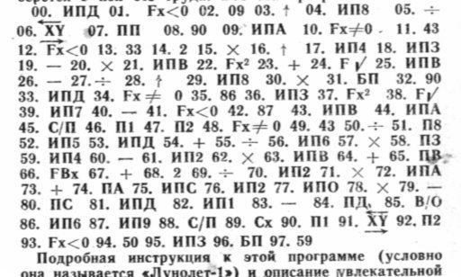
Про игры на бумаге...
В восьмидесятые массовым игровым устройством в СССР были не компьютеры, а программируемые калькуляторы, вроде электроники Б3-34, МК-54, МК-61 (который был и у меня, вернее моего папы). В журнале "Техника - молодёжи" выходила рубрика "Клуб электронных игр", где каждый месяц печатали... хм... новые игры, и слово "печатали" тут абсолютно буквальное. Игра распространялась в виде листинга на странице в журнале, а поскольку носителя данных у калькулятора не было, то игру требовалось при каждом включении заново вбивать в память, набирая инструкции на клавиатуре. Это загрузочный экран длился минут эдак двадцать и требовал внимательности, потому что опечатка на сорок седьмом шаге обнаруживалась в лучшем случае падением программы, а в худшем никогда.
Всё богатство платформы ограничивалось примерно сотней шагов программы и полутора десятками регистров памяти, если мне не изменяет память, для сравнения, даже у Atari 2600 с её 128 байтами было на порядки больше пространства для манёвра.
Хитом рубрики был "Лунолёт", клон Lunar Lander, и сначала я прочитал фантастический рассказ Михаила Пухова без листинга, который и объяснял, что и почему надо делать, а потом увидел в журнале листинг и в голове что-то щелкнуло. Надо было управлять аппаратом с ограниченным запасом топлива, вводя тягу и время работы двигателя, и надо было посадить его на Луну со скоростью не выше пяти метров в секунду, иначе перегрузка и гибель экипажа. На индикаторе калькулятора при этом были только цифры: высота, скорость, остаток топлива, а вся графика, весь ландшафт, и вся драма посадки происходили в воображении.
Вокруг этой игры выросла большое сообщество в рамках пуховского цикла "Путь к Земле", где даже сообщение об ошибке на индикаторе, знаменитое ЕГГОГ, стало частью фольклора и получило внутримировое объяснение. По сути это был геймдев, где графическим движком служила собственная голова, а дистрибуция работала через типографию и физическую бумагу.
Поэтому когда мне в следующий раз скажут, что сейчас игру нельзя сделать без Unreal, бюджета и издателя, я просто покажу им листинг из "Техники - молодёжи" и фотку десятилетнего себя с калькулятором.
Не буду отходить от традиций этого жанра, и если у вас есть похожие байки, расскажите о нем в комментариях, если будут с указанием источника, вообще замечательно.
Ссылки, если вдруг кто захочет поискать баги, недочеты и расхождения:
https://www.gamedeveloper.com/programming/developers-share-their-most-memorable-dirty-coding-tricks
https://en.wikipedia.org/wiki/Burnout_3:_Takedown
https://www.gamedeveloper.com/programming/my-hardest-bug-ever
https://beza1e1.tuxen.de/lore/crash_bandicoot.html
https://davidkushner.substack.com/p/prepare-to-meet-thy-doom
https://doomwiki.org/wiki/Broadcast_packet_meltdown
https://en.wikipedia.org/wiki/Nuclear_Gandhi
https://www.gamespot.com/articles/sid-meier-confirms-nuclear-gandhi-is-sadly-just-a-/1100-6481941/
https://www.grandtheftwiki.com/Race’n’Chase
https://www.destructoid.com/grand-theft-auto-only-exists-because-of-a-glitch/
https://www.filfre.net/2016/06/peter-molyneuxs-kingdom-in-a-box/
https://handwiki.org/wiki/Company:Bullfrog_Productions
https://www.techinsider.ru/technologies/1738689-pochemu-amerika-soshla-s-uma-po-igre-perestroika-sdelannoi-v-sssr/
https://hypestorm.ru/perestroika/
https://dtf.ru/avi/1057195-kosmicheskie-reindzhery-istoriya-serii
https://habr.com/ru/post/176485/
https://pacman.fandom.com/wiki/Map_256_Glitch
https://en.wikipedia.org/wiki/Billy_Mitchell_(gamer)
https://errors.fandom.com/wiki/DK_kill_screen
https://www.gamesradar.com/games/donkey-kong/after-44-years-donkey-kong-player-discovers-that-the-legendary-kill-screen-isnt-really-the-end/
https://www.pcgamer.com/all-this-time-aliens-colonial-marines-stupid-ai-may-have-been-caused-by-a-single-typo/
https://techraptor.net/gaming/news/coding-typo-ruined-xenomorph-ai-in-aliens-colonial-marines
https://nee.lv/2021/02/28/How-I-cut-GTA-Online-loading-times-by-70/
https://www.techdirt.com/2021/03/18/modder-solves-gta-online-loading-time-problem-gets-paid-rockstar-it/
https://dubikvit.livejournal.com/23894.html
https://droider.ru/post/volk-lovit-yajcza-sovetskoe-nintendo-razbor-05-09-2022/
https://edition.cnn.com/2014/04/27/tech/gaming-gadgets/atari-et-video-game